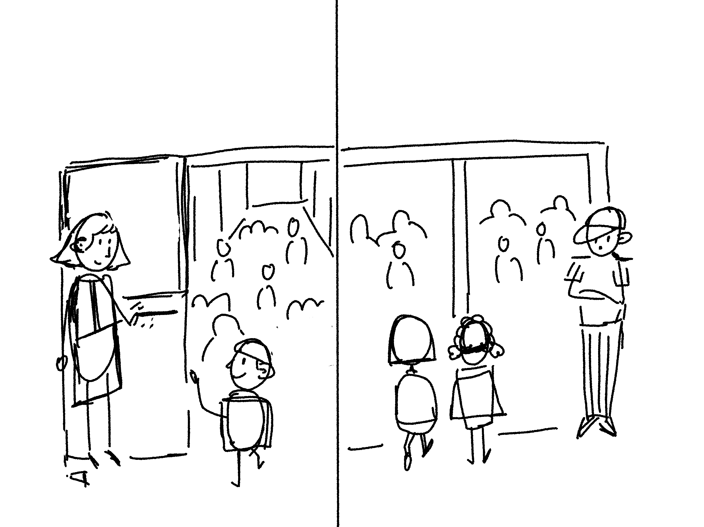
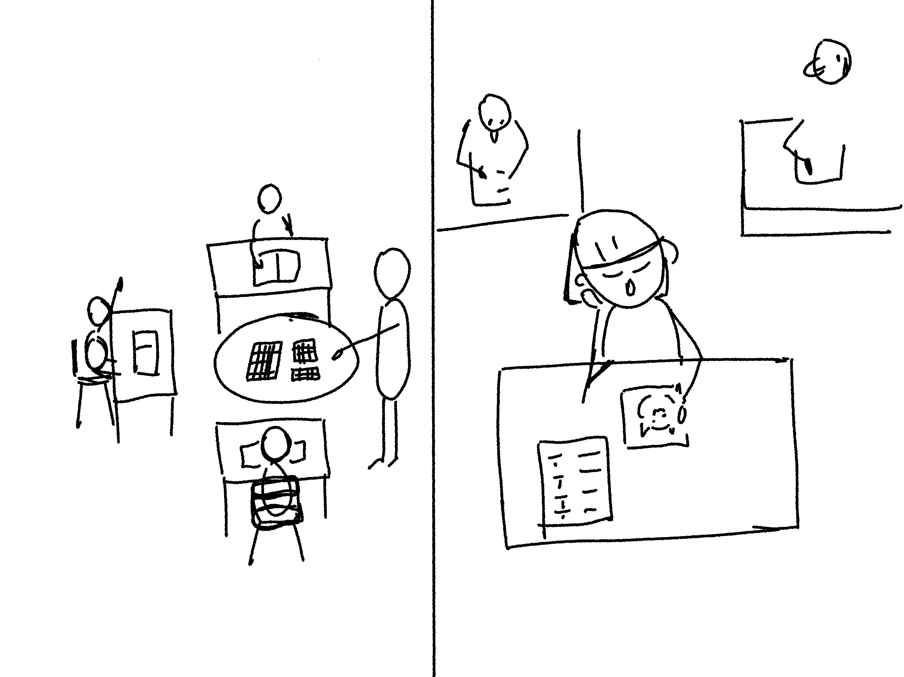
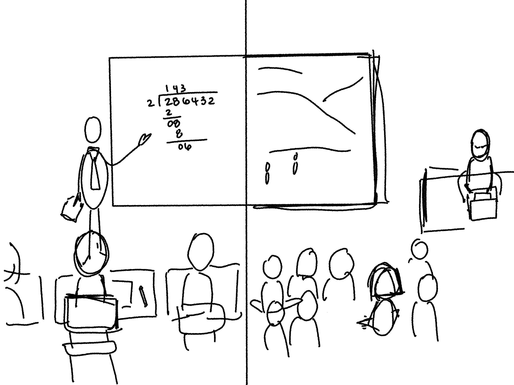

Divided Schools
School administrative boundaries define the educational opportunities that students have from Kindergarten to 12th grade. But these boundaries often reinforce racist redlining policies from the 1930’s. Shifting these boundaries could ensure equitable access for all students.

This is Quinn and Vera. They're both 5th graders at different elementary schools and we're going to follow them through a day at school.
Quinn and Vera arrive at school in the morning.
Quinn is greeted by the assistant principal as he arrives.
Vera chats with her friend as she heads in; a security guard watches students arrive.
Quinn starts his day with a math class. He was moved into an advanced math class this year and really enjoys it.
Vera also has math. She finished her quiz quickly and is now doodling as the others in class finish up their quiz. She's good at math, but is a bit bored in this class. Her school doesn't have an advanced math program for her grade.
Quinn is learning history next. It's not his favorite subject but his teacher is funny and makes the material enjoyable anyway.
Vera was looking forward to her science lesson, but her teacher is out again. He's been absent for almost 10 days this year. Their substitue teacher puts a movie on for the class.
....